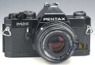

器材库 > 胶片单反相机 > MX

规格总览
产品类型
手动对焦胶片单反相机
发布日期
1976
镜头卡口
Pentax AF
停产
是
取景规格
景深预视
有
曝光控制
测光模式
中央重点测光
测光范围
1-19EV
ISO感光度
ISO25-1600
曝光补偿
±2EV
快门
快门类型
横走布帘快门
快门速度
1/1000-1+B
闪光同步速度
1/100
电源
电池
LR44或SR44两节
外观
颜色
黑色
重量
495g
其它规格
备注
可换调焦屏；可外接卷片器
yufake2013-03-19 22:254.17 分
操作性 4.00功能性 4.00美观性 5.00趣味性 4.00耐用性 4.00性价比 4.00
hotcao2011-04-11 12:464.42 分
操作性 4.00功能性 4.00美观性 5.00趣味性 4.50耐用性 4.00性价比 5.00
my198611242011-01-01 12:284.58 分
操作性 4.50功能性 4.50美观性 5.00趣味性 4.00耐用性 4.50性价比 5.00
为了白头愁白了头2009-06-21 13:054.17 分
操作性 5.00功能性 3.00美观性 4.50趣味性 3.50耐用性 4.00性价比 5.00
至尊宝2009-05-27 08:104.92 分
操作性 5.00功能性 4.50美观性 5.00趣味性 5.00耐用性 5.00性价比 5.00
zhushuangnn2009-01-10 13:193.92 分
操作性 3.00功能性 4.50美观性 4.50趣味性 3.00耐用性 4.50性价比 4.00
chanwin2006-05-17 18:254.5 分
操作性 3.50功能性 4.00美观性 5.00趣味性 5.00耐用性 5.00性价比 4.50
yuzunsh2006-05-03 09:484.17 分
操作性 4.50功能性 4.00美观性 4.50趣味性 4.00耐用性 4.00性价比 4.00
五年宾得2005-02-04 03:054.75 分
操作性 4.00功能性 4.50美观性 5.00趣味性 5.00耐用性 5.00性价比 5.00
NewB2004-12-01 17:194.83 分
操作性 5.00功能性 4.50美观性 5.00趣味性 5.00耐用性 4.50性价比 5.00
产品图 / 样片
Pentax MX